2024年北京市顺义区初中学业水平考试地理试卷 原卷解析
2024年北京市初中学业水平考试（顺义区）
地理试卷
姓名____准考证号____考场号____座位号____
考生须知
1．本试卷共10页，共两部分，共23题，满分60分。考试时间70分钟。
2．在试卷上准确填写姓名、准考证号、考场号和座位号。
3．试题答案一律填涂或书写在答题卡上，在试卷上作答无效。
4．在答题卡上，选择题用2B铅笔作答，其他试题用黑色字迹签字笔作答。
5．考试结束，将本试卷、答题卡一并交回。
第一部分
本部分共20题，每题1分，共20分。在每题列出的四个选项中，选出最符合题目要求的一项。
二十四节气反映了农耕生产与大自然节律的关系。2024年6月5日，我国进入芒种节气。此时，正是南方种稻与北方收麦之时。图1为二十四节气示意图，图2为我国某区域示意图。读图，完成下面小题。
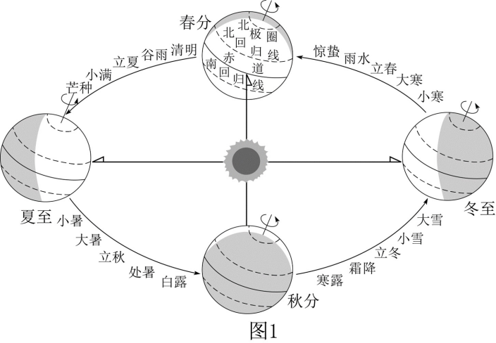
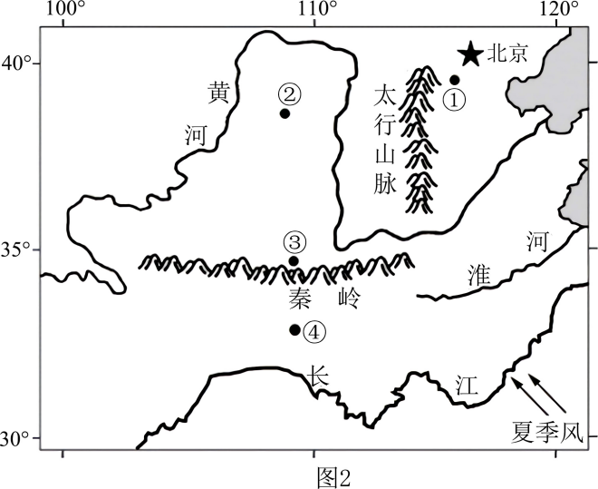
1. 芒种当日（ ）
A. 我国各地昼长夜短B. 阳光直射南回归线C. 南极圈内出现极昼D. 阳光直射北回归线
2. 芒种-夏至期间，图2中（ ）
A. 南北气温差异显著增大B. ①地较②地更适宜收割冬小麦
C. 均已开始抢时收割晚稻D. ④地较③地受夏季风影响更大
【答案】1. A 2. D
【解析】
【1题详解】
芒种是二十四节气中的第九个节气，在6月5日或6日，此时太阳直射北半球，我国各地昼长夜短。A正确；阳光直射南回归线时，北半球昼短夜长，为北半球的冬至日，即12月22日前后，B错误；南极圈内出现极昼时，太阳直射南回归线，为北半球的冬至日，即12月22日前后，C错误；阳光直射北回归线时，北半球昼长夜短，为北半球的夏至日，即6月22日前后，D错误。故选A。
【2题详解】
芒种 - 夏至期间，太阳直射点在北半球且向北移动，南北气温差异会显著减小，A错误；②地位于中温带，种植的应是春小麦，而①地属于暖温带，种植的是冬小麦，B错误；芒种 - 夏至期间，我国大部分地区还未到收割晚稻的时间，晚稻通常在秋季收割，C错误；夏季风是从海洋吹向陆地的风，但由于③受秦岭山脉的阻挡，故④地较③地受夏季风影响更大，D正确；故选D。
【点睛】我国古代人民根据日月运行位置和天气及动植物生长等自然现象，把一年平分为二十四等份，这就是二十四节气，相邻两个节气之间的天数大约为15天。二十四节气能反映季节的变化，指导农事活动。
祖国的一山一水皆为家园，一岛一峰皆是主权。无论是祖国最北端的北极哨所，还是南沙群岛的华阳礁哨所，都有这样一批忠诚奉献的守卫者。下图为我国部分边防哨所示意图。读图，完成下面小题。
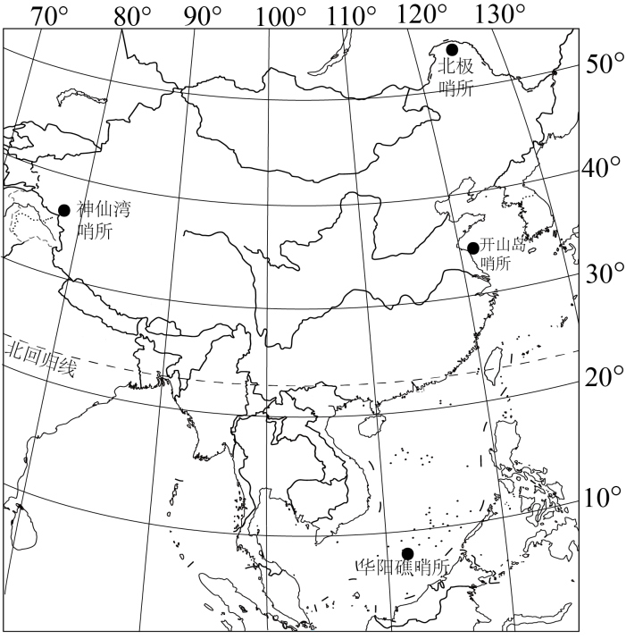
3. 我国（ ）
①北极哨所到华阳礁哨所横跨20个纬度，体现出我国大部分位于温带地区
②“当开山岛上洒满阳光时，神仙湾哨所仍满天星辰”，体现我国幅员辽阔
③设立华阳礁哨所、北极哨所等，有利于维护国家主权统一和领土完整
④属于内陆国，地理位置优越，疆域辽阔，因此各哨所自然环境差异大
A. ①②B. ②③C. ①③D. ②④
4. 驻守在神仙湾哨所和华阳礁哨所上的“守卫者”，可能要面对的气象灾害分别是（ ）
A. 干旱 泥石流B. 洪水 干旱C. 冻雨 沙尘暴D. 暴雪 台风
【答案】3. B 4. D
【解析】
【3题详解】
北极哨所到华阳礁哨所横跨40多个纬度，我国大部分位于北回归线以北的北温带，①错误；“当开山岛上洒满阳光时，神仙湾哨所仍满天星辰”，体现我国东西跨经度广，幅员辽阔，②正确；一山一水皆为家园，一岛一峰皆是主权，设立华阳礁哨所、北极哨所等，有利于维护国家主权统一和领土完整，③正确；我国海陆兼备，属于临海国，地理位置优越，疆域辽阔，各哨所自然环境差异大，④错误。根据以上分析可知，B正确、ACD错误。故选B。
【4题详解】
神仙湾哨所位于祖国西部喀喇昆仑山脉中段，经常要面临的气象灾害可能是暴雪，主要是由于该地区海拔高，气温低，天气多变；华阳礁哨所位于祖国南部的南沙群岛，经常要面临的气象灾害可能是台风，台风主要影响我国东南沿海，D正确。泥石流不属于气象灾害，排除A。神仙湾哨所降水较少，不会受到洪涝灾害影响；华阳礁哨所降水丰沛，植被覆盖率高，不会发生干旱和沙尘暴，BC错误。故选D。
【点睛】神仙湾哨所位于喀喇昆仑山脉中段、新疆皮山县境内。这里最大海拔高度为5380米，是高原上的高原。年平均气温低于零度，昼夜最大温差30多度，冬季长达6个多月，一年里17米/秒以上大风天占了一半，空气中的含氧量不到平地的一半，而紫外线强度却高出一半。
2024年是《长江保护法》实施三周年，我们用法制力量守护好长江。随着长江生态的改善，长江鱼类资源开始恢复，被称作“长江生态晴雨表”的江豚数量也开始有所增长，长江的“微笑天使”又回来了。下图为长江流域及江豚主要分布区示意图。读图，完成下面小题。
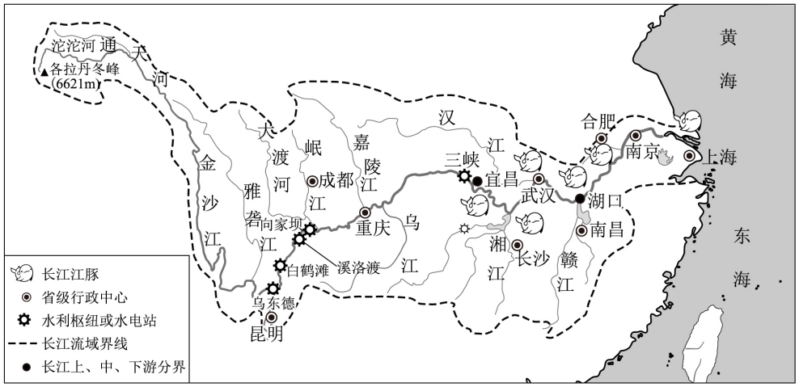
5. 长江（ ）
A. 自西向东注入东海B. 白鹤滩水电站海拔低于三峡水电站
C. 上游河段航运发达D. 支流众多，大部分于下游汇入干流
6. 关于“微笑天使”，描述正确的是（ ）
①江豚的回归反映了长江流域生态环境的改善
②江豚集中分布在长江中下游地区
③江豚数量增长说明长江江阔水深，工农业发达
④保护江豚，保护长江，人人有责
A ①②③B. ①②④C. ①③④D. ②③④
①②③B. ①②④C. ①③④D. ②③④
【答案】5. A 6. B
【解析】
【5题详解】
长江发源于青藏高原，自西向东流，最终注入东海，A正确；白鹤滩水电站位于金沙江，海拔高于三峡，B错误；上游因水流湍急、落差大，航运受限，C错误；长江支流主要在中游汇入，下游支流较少，D错误。故选A。
【6题详解】
据材料可得，江豚对水质敏感，数量增长说明生态保护见效，①正确；图中显示江豚主要分布于中下游， ②正确；江豚增长与生态保护相关，工农业发达容易导致污染，江豚数量会减少，③错误；保护江豚，保护长江，人人有责，④正确。综上，①②④正确，故选B。
【点睛】长江上游和中游的分界点是宜昌，中游和下游的分界点是湖口；长江主要的支流有汉江、湘江、赣江等。
2024年4月25日，中关村论坛年会上正式发布了《中关村世界领先科技园区建设方案（2024-2027年）》。作为我国第一个国家级高新技术产业开发区和国家自主创新示范区，中关村一直走在科技创新的前沿。下图为京津唐工业基地示意图。读图，完成下面小题。
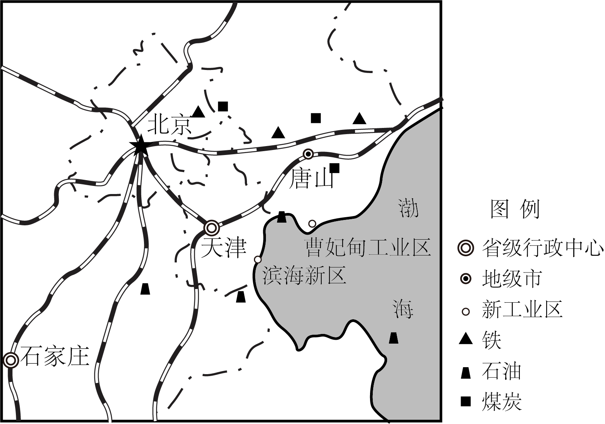
7. 中关村国家自主创新示范区的发展体现了北京是全国的（ ）
A. 政治中心B. 科技创新中心C. 文化中心D. 国际交往中心
8. 在京津冀协同发展下，京津唐工业基地的发展方向是（ ）
A. 以重工业为主B. 以轻工业为主
C. 资源与高新技术相结合D. 综合服务与旅游相结合
【答案】7. B 8. C
【解析】
【7题详解】
北京作为政治中心主要体现在是国家决策机构所在地，众多国家机关集中等方面，中关村的发展并非主要体现政治方面，A错误。中关村是我国第一个国家级高新技术产业开发区和国家自主创新示范区，一直走在科技创新前沿，这明显体现了北京在科技创新领域的重要地位，说明北京是全国的科技创新中心，B正确。北京作为文化中心主要体现在有丰富的文化遗产、众多的文化场馆、文化活动等方面，中关村的发展重点不在文化方面，C错误。北京作为国际交往中心主要体现在举办众多国际会议、有众多国际组织和外交机构等方面，中关村的发展和国际交往中心的体现关系不大，D错误。故选B。
【8题详解】
京津唐工业基地虽然有一定重工业基础，但在京津冀协同发展背景下，单纯以重工业为主不符合可持续发展和产业升级的需求，而且对环境压力较大，A错误。京津唐工业基地并非以轻工业为主导，其产业结构较为综合，B错误。京津唐工业基地资源相对丰富，同时北京有中关村这样的科技创新高地，在京津冀协同发展下，可以将资源优势与高新技术相结合，实现产业的优化升级和可持续发展，C正确。综合服务与旅游相结合并非京津唐工业基地在京津冀协同发展下的主要发展方向，工业基地还是以工业产业发展为重点，D错误。故选C。
【点睛】北京是我国著名的古都和历史文化名城，拥有3000多年的建城史和800多年的建都史。悠久的历史为北京留下了无数名胜古迹。长城、北京故宫、周口店北京人遗址、颐和园、天坛、明十三陵等先后被列入《世界遗产名录》。
深中通道集“隧、岛、桥、水下互通”为一体。2024年该工程通车后，深圳到中山的行车时间缩短至半小时。下图为深中通道位置和“东隧西桥”示意图。读图，完成下面小题。
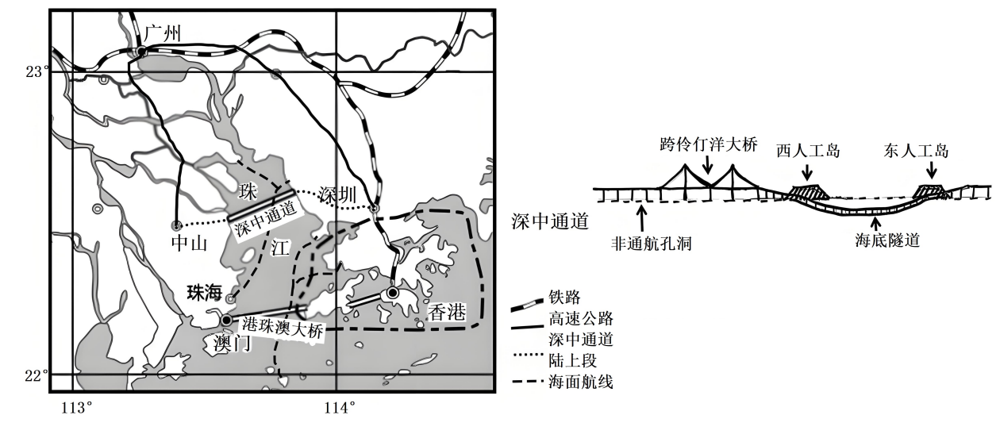
9. 深中通道东段采用海底隧道，主要是为了（ ）
A. 降低建设施工的难度B. 增添沿途旅游观光效果
C. 保留主航道通航能力D. 连接香港与深圳两城市
10. 深中通道的贯通（ ）
①加快深圳人口迁移到中山市工作②完善珠江三角洲地区的交通网络
③促进珠江三角洲地区的经济发展④缩短珠江两岸的通行距离和时间
A. ①②③B. ①②④C. ①③④D. ②③④
【答案】9. C 10. D
【解析】
【9题详解】
深中通道东段采用海底隧道，是为了保留主航道通航能力，方便大型船舶通行，C正确；海底隧道建设难度更高，不是为降低施工难度，A错误；主要目的不是旅游观光，B错误；连接深圳与中山等，不是为连接香港与深圳，D错误；故选C。
【10题详解】
深圳经济发达，深中通道的建设，并不会加快深圳人口迁移到中山工作，①错误；深中通道的建设完善珠江三角洲区域的交通网络，促进了珠江三角洲区域经济发展，缩短珠江两岸的通行距离和时间，②③④正确。综上，D②③④正确，ABC错误；故选D。
【点睛】深中通道是连接深圳市、中山市和广州市的跨海通道，在设计上采用“东隧西桥”方案。
分析降水量分布状况是认识区域差异的重要内容。下图为北半球年降水量分布图。读图，完成下面小题。
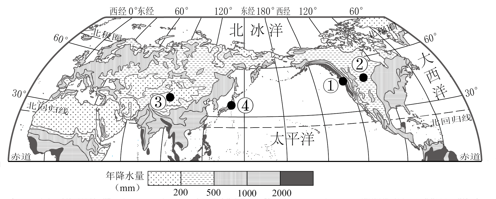
11. 据图，北半球年降水量分布（ ）
A. 赤道附近多，北极地区少B. 回归线附近降水丰富
C. 沿海地区多，内陆地区少D. 大陆东岸降水最丰富
12. 图中①②③④四地（ ）
A. ①地年降水量约为500mmB. ②地年降水量低于①地——纬度位置
C. ③地年降水量高于2000mmD. ④地年降水量高于③地——海陆位置
【答案】11. A 12. D
【解析】
【11题详解】
从图中可以明显看到，赤道附近地区颜色较深，代表年降水量多，而北极地区颜色浅，代表年降水量少，所以赤道附近多，北极地区少，A正确。观察图中回归线附近地区，大陆西岸颜色浅，说明降水少，并非回归线附近降水都丰富，B错误。在中纬度地区沿海地区降水多，内陆地区降水少，但在低纬度和高纬度地区这种规律不明显，C错误。从图中看，非洲赤道附近地区西岸的降水比大陆东岸更为丰富，D错误。故选A。
【12题详解】
根据图中的年降水量图例，①地年降水量远高于500mm，A错误。②地年降水量低于①地主要受到海陆位置、地形等因素的影响，两地纬度位置大致相当，纬度位置对两地降水影响小，B错误。③地年降水量在0-200mm之间，C错误。④地位于沿海地区，③地位于内陆地区，④地年降水量高于③地，主要是受海陆位置影响，D正确。故选D。
【点睛】世界年降水量分布的一般规律是：赤道附近地带降水多；两极地区降水少；南、北回归线两侧，大陆西岸降水少，大陆东岸降水多；中纬度沿海地区降水多，内陆地区降水少。
下图为世界人口密度分布及1950、2023年各大洲人口数量柱状图。读图，完成下面小题。
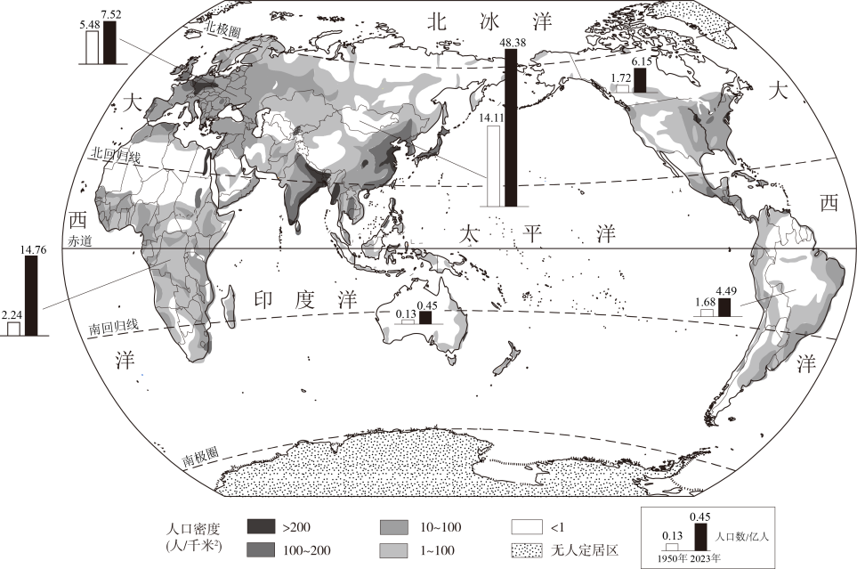
13. 人口数量最多和增长最快的大洲分别是（ ）
A. 亚洲、欧洲B. 非洲、大洋洲C. 亚洲、非洲D. 南美洲、北美洲
14. 世界上人口主要分布在（ ）
A. 终年湿热的雨林地区B. 远离海洋的大陆内部C. 中低纬度的沿海平原D. 终年严寒的两极地区
【答案】13. C 14. C
【解析】
【13题详解】
世界上共有七个大洲，除南极洲无常住人口以外，其余六个大洲都有常住居民，各大洲人口数量差异大，读图可知，人口最多的大洲是亚洲，人口增长最快的是非洲，C正确，ABD错误。故选C。
【14题详解】
由图可以看出，世界人口主要分布在中低纬度的近海平原地区，这些地区地形平坦，气候适宜，交通便利，适合人类生存与发展，C正确，ABD错误。故选C。
【点睛】人口增长既不是越快越好，也不是越慢越好，要与社会、经济相适应，与环境、资源相协调；通常经济发展水平高的地区人口自然增长率更低，相反则越高，人口增长过快不利于社会经济的发展。
亚洲地域辽阔，自然环境复杂。下图为亚洲沿80°E地形剖面图。读图，完成下面小题。
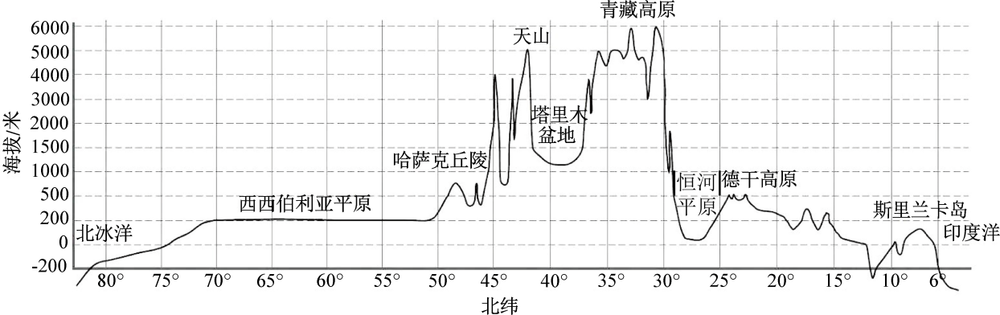
15. 据图可知（ ）
A. 亚洲地势低平，起伏较和缓B. 亚洲地势中部高，南北低
C. 亚洲地形单一，以丘陵为主D. 亚洲纬度跨度大，无热带
16. 恒河平原成为重要粮食产区的优势是（ ）
A 地形复杂B. 面积广阔C. 热量充足D. 四面临海
【答案】15. B 16. C
【解析】
【15题详解】
读亚洲沿80°E地形剖面图可知，亚洲中部以高原山地为主，地势高，南北两侧以平原为主，地势较低，故地势中部高，南北低，B正确；亚洲地势起伏大，A错误；亚洲地形复杂多样，以高原、山地为主，C错误；亚洲纬度跨度，地跨寒、温、热三带，D错误；故选B。
【16题详解】
恒河平原位于低纬度地区，热量充足，所以成为重要的粮食产区，C正确；恒河平原地形以平原为主，地形单一，A错误；面积广阔不是恒河平原成为重要粮食产区的主要优势，B错误；恒河平原只有东面临海，D错误。故选C。
【点睛】亚洲面积约4400万平方千米，是世界第一大洲。从半球位置来看，亚洲主要位于东半球和北半球。
为探究影响气候的因素，某校地理小组进行实验。如图1所示，实验准备了干沙土、水、温度计，同时置放于教室，学生分别于7：00、14：00和19：00测量记录温度。图2为实验数据图。读图，完成下面小题。
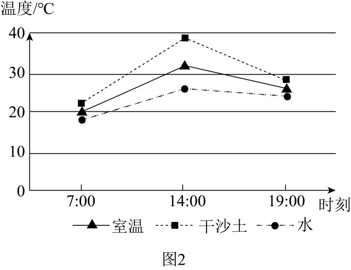
17. 在相同条件下，干沙土比水（ ）
①升温幅度大②降温幅度小③最高温度更高④最低温度更高
A. ①③B. ①④C. ②④D. ②③
18. 根据实验结果，在不考虑地形因素的影响下（ ）
A. 纬度越低，气温越高B. 纬度越高，气温越低
C. 同纬度地区，陆地气温日较差大于海洋D. 同纬度地区，陆地气温总是要高于海洋
【答案】17. A 18. C
【解析】
【17题详解】
读图2可知，从7：00到14：00，干沙土比水升温幅度大，①正确。从14：00到19：00，干沙土比水降温幅度也大，②错误。从图2中可以看出，干沙土在14：00左右达到的最高气温比水的最高气温高，③正确。图中的时间仅为7：00——19：00，并非完整的一天，不能确定一天之中的最低温度的高低，④错误。故选A。
【18题详解】
读图结合材料可知，实验中干沙土代表陆地，水代表海洋，通过图2中干沙土和水的温度变化数据对比，主要探究陆地和海洋的气温变化特点，即海陆温度变化的差异，与纬度因素对气温的影响无关，AB错误。气温日较差即一天中最高气温与最低气温的差，从图2可以看出，干沙土的气温日较差比水的气温日较差大，表明同纬度地区，陆地气温日较差大于海洋，C正确。陆地和海洋气温高低在不同季节是不同的，纬度相同的地方，夏季陆地气温高于海洋，冬季陆地气温低于海洋，D错误。故选C。
【点睛】由于陆地的比热容较小，吸收和释放热量的速度较快，因此陆地气温的变化比海洋更为剧烈，日较差和年较差都较大。而海洋由于比热容较大，气温变化相对平缓，日较差和年较差较小。
2024年2月7日，中国南极秦岭站建成并投入使用。秦岭站作为现代化科考站，新能源占比超过60%。图1为我国南极地区科考站位置示意图，图2为学生绘制的秦岭站手抄报。读图，完成下面小题。
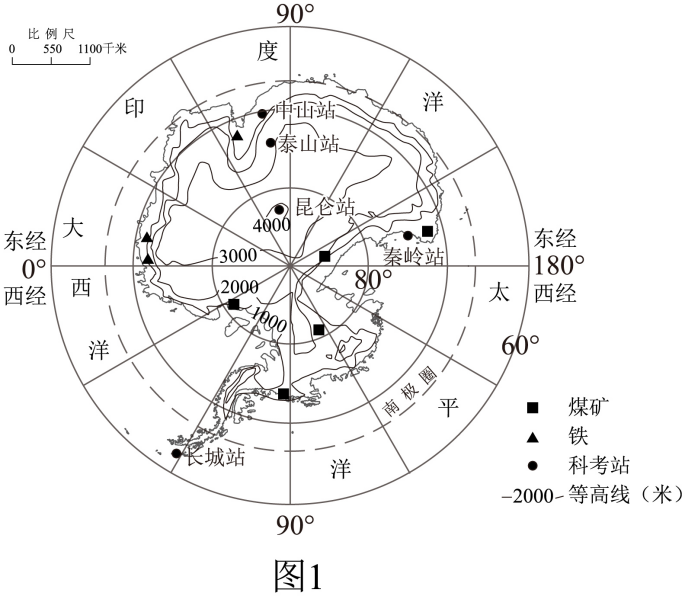
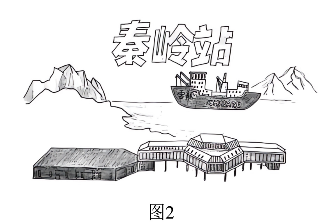
19. 秦岭站主体建筑底层架空主要是为了（ ）
A 预防蚊虫叮咬B. 防风防潮C. 避免积雪掩埋D. 保护环境
20. 关于我国南极科考站描述正确的是（ ）
A. 中山站位于泰山站南方B. 昆仑站海拔约为2000米
C. 长城站新能源占比超过60%，主要为煤矿D. 秦岭站填补我国在太平洋沿岸观测的空白
【答案】19. C 20. D
【解析】
【19题详解】
南极地区多暴风雪，秦岭站建筑主体设计采用架空方式，能够防积雪掩埋，利于大风通过，C正确；南极地区气候酷寒，并没有蚊虫，A错误；南极地区降水稀少，年平均降水量为55毫米，较为干燥，防潮不是目的，B错误；秦岭站主体建筑底层架空与保护环境关系不大，D错误。故选C。
【20题详解】
中山站大致位于泰山站的北方，A错误；昆仑站海拔约为4000米，B错误；据材料可知，新能源占比超过60%的是秦岭站，而非长城站，且秦岭站充分利用的新能源为风能和太阳能，并非煤矿，C错误；秦岭站濒临太平洋扇区，填补我国在太平洋沿岸观测的空白，D正确。故选D。
【点睛】南极地区是地球上最冷的地区，年平均气温-50℃；除严寒外，南极地区还被称为地球上的“白色荒漠”，年平均降水量为55毫米，降水量最少的地方不足5毫米；南极地区也被称为地球上的“风库”，年平均风速为17~18米/秒，最大风速可达100米/秒。综上所述，南极地区的气候特点可概括为酷寒、干燥和烈风。
第二部分
本部分共3题，共40分。
泛舟潮白和美顺义
21. 自2021年开始，随着北京市对潮白河生态补水工程的推进，潮白河又恢复了生机。2024年5月，潮白河游船项目进行了试航，预计9月份正式通航。为认识家乡潮白河（顺义段），同学们开展了“泛舟潮白”的主题活动。图1为顺义区潮白游船航线示意及沿线景观图，图2为顺义区地形图，表1为1991-2020年顺义区气候数据。阅读图文资料，回答下列问题。
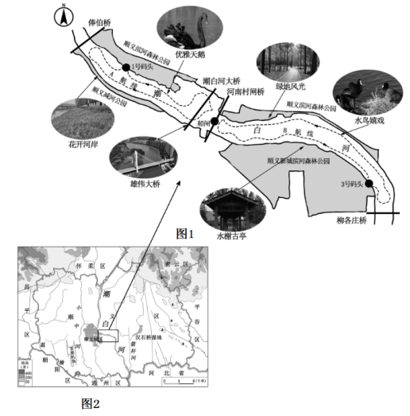
月份（月） | 1 | 2 | 3 | 4 | 5 | 6 |
月平均气温（℃） | -3.5 | -0.1 | 6.9 | 14.8 | 21.0 | 25.0 |
月降水量（mm） | 2.4 | 4.9 | 8.8 | 19.8 | 34.8 | 73.5 |
月份（月） | 7 | 8 | 9 | 10 | 11 | 12 |
月平均气温（℃） | 26.8 | 25.7 | 20.5 | 13.1 | 4.5 | -1.8 |
月降水量（mm） | 192.1 | 137.1 | 60.3 | 27.5 | 14.1 | 2.2 |
【潮白概况】
（1）结合相关资料，请完成下列框架图。
地形 | 地形类型以①____为主 | 流速②____（快/慢） | 河流 |
气候 | 冬季气温③____0℃（高于/低于） | ④____结冰期（有/无） |
降水集中在⑤____月 | 该时段水量较⑥____（大/小） |
【潮白泛舟】
“泛舟潮白”考察活动资料 潮白河通航河段位于潮白河森林公园，码头的设计融入了潮白河文化属性和多样的体验功能。 1号码头为漕运文化主题码头，彰显大运河文化带的历史魅力。 3号码头为湿地文化主题码头，展示生活、生态、生机的和谐共生。 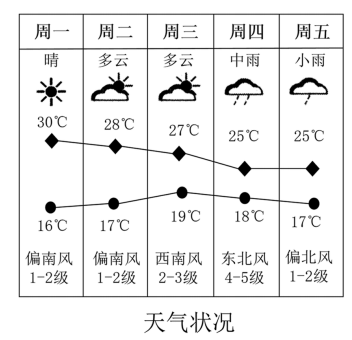 |
（2）请设计“泛舟潮白”考察活动任务单。
【潮白发展】
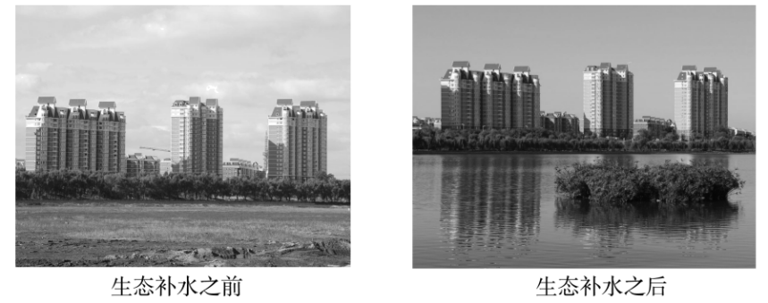
（3）结合生活体验，谈谈潮白河生态补水后对顺义的影响。（从生态环境、经济发展、文化建设等方面分析，至少答出两点）
【答案】（1） ① 平原 ②. 慢 ③. 低于 ④. 有 ⑤. 7 ⑥. 大
（2）考察航线选择A，考察时间选择春季，理由是沿途自然景观丰富，可以看见潮白河两岸的植被、清澈的河水等景观；考察收获是让我更加深入地了解了家乡潮白河的自然环境和人文景观，潮白河两岸郁郁葱葱的植被让我感受到了家乡生态环境的改善，清澈的河水也让我为家乡的水资源保护工作感到骄傲，也让我更加热爱自己的家乡，明白了保护家乡环境的重要性，我会从自身做起，为家乡的建设贡献。
考察航线可以选择B航线，考查时间为春季 ，理由是春季气候适宜，沿途植被开始复苏，景色宜人，同时避免了夏季的高温和冬季的寒冷，便于考察活动的开展考察内容记录沿途可见可见绿地风光、水榭古亭等景观，考察收获为通过这次考察活动，我更加深入地了解了家乡的自然风光和人文景观。家乡的河流壮丽秀美，水鸟充满生机与活力。在日常生活中，我也能感受到家乡的不断发展和进步。这次考察让我更加热爱自己的家乡，要珍惜家乡的自然资源，传承和弘扬家乡的优秀文化。
（3）生态环境方面：生态补水使潮白河水量增加，改善了水生生态系统； 经济发展方面：游船项目的开通带动了沿河旅游； 文化建设方面：项目的建设展示了大运河文化带的历史，增强了市民的文化认同感，同时为市民提供了亲水、休闲、科普的场所，丰富了文化生活。
【解析】
【分析】本大题以顺义区潮白游船航线示意及沿线景观图、顺义区地形图为材料，涉及顺义的地形、气候、河流等相关内容，考查学生掌握课本知识的能力和综合思维的地理素养。
【小问1详解】
读图并结合所学知识可得，潮白河顺义段位于华北平原，地形以平原为主，河流流速慢；气候以温带季风气候为主，夏季高温多雨，冬季寒冷干燥，冬季气温低于0℃，河流有结冰期；降水量最多的月份为7月，降水集中期河流水量增大，故该时段水量较大。
【小问2详解】
如考察航线选择A航线，原因是在A航线的春季的沿途自然景观丰富，能更全面地了解潮白河的生态环境，沿途可以看见潮白河两岸的植被种类、河流的水质情况、美丽的天鹅、桥梁建筑工程等，通过这次“泛舟潮白”的考察活动，我更加深入地了解了家乡潮白河的自然环境和人文景观。潮白河两岸郁郁葱葱的植被让我感受到了家乡生态环境的改善，清澈的河水也让我为家乡的水资源保护工作感到骄傲。这次活动让我更加热爱自己的家乡，也让我明白了保护家乡环境的重要性，我会从自身做起，为家乡的建设贡献。
如选择B航线，选择在春季考察，理由是春季气候适宜，沿途植被开始复苏，景色宜人，同时避免了夏季的高温和冬季的寒冷，便于考察活动的开展考察内容记录沿途可见绿地风光、水榭古亭等景观，考察收获为通过这次考察活动，我更加深入地了解了家乡的自然风光和人文景观。家乡的河流壮丽秀美，水鸟充满生机与活力。在日常生活中，我也能感受到家乡的不断发展和进步。这次考察让我更加热爱自己的家乡，也让我明白了要珍惜家乡的自然资源，传承和弘扬家乡的优秀文化。
【小问3详解】
生态环境方面：生态补水使潮白河水量增加，改善了水生生态系统，为鱼类、鸟类等野生动物提供了栖息地，提升了区域生物多样性；补水后的河岸植被更加茂盛，有助于吸收二氧化碳、释放氧气，并减少城市热岛效应。 经济发展方面：游船项目的开通带动了沿河旅游，如2024年的试航及9月正式通航，吸引游客，带动餐饮、住宿等产业发展； 生态环境改善使沿岸地区成为宜居地带，提高了周边住宅和商业用地的价值。 文化建设方面：漕运文化码头（1号码头）等项目的建设，展示了大运河文化带的历史，增强了市民的文化认同感；湿地文化主题码头（3号码头）等设施的建设，为市民提供了亲水、休闲、科普的场所，丰富了文化生活。
寻源稻香共铸辉煌
22. 农业是国家发展的基石，在社会、经济、环境和文化领域发挥着关键作用。同学们围绕我国水稻种植展开探究。图1为中国水稻分布图，图2为哈尔滨、杭州气温曲线和降水量柱状图。阅读图文资料，回答下列问题。
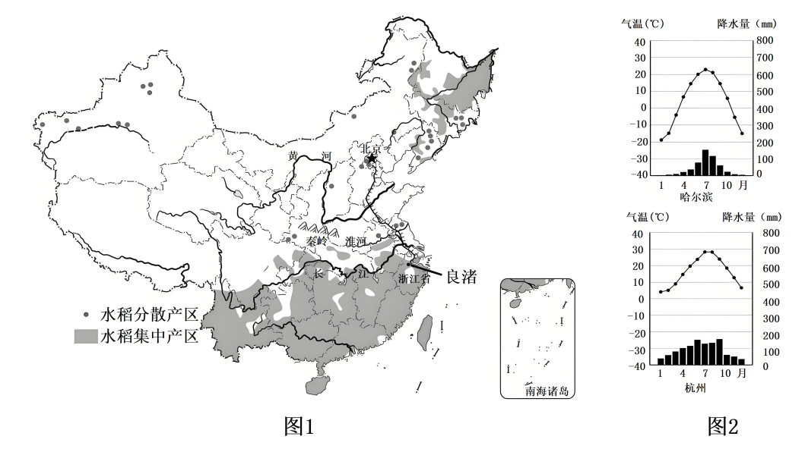
主题一：追溯万年的稻作起源
同学们通过查阅资料了解到我国水稻种植有着悠久的历史。2019年7月，在被列入世界遗产名录的良渚古城遗址中，考古工作者们发掘出大型稻田遗址和约20万斤炭化稻谷。
同时，同学们还查阅到，良渚古城所在地区地处丘陵、河湖交错的浅水沼泽地带，农业生产以犁耕为主，并拥有大型水利系统。
（1）良渚古城遗址位于____省杭州市，该省简称为____。
（2）通过分析查阅到的资料，同学们推断良渚地区历史上种植水稻的优势条件有____（至少答出两点）。
主题二：和而不同的水稻种植
根据自然环境的不同，水稻在我国有着明显的地域分布。
（3）我国水稻分布特点为____。
（4）水稻集中产区位于____（重要地理界线）以南。这里1月平均气温在____℃以上，年降水量大于____mm。
（5）东北地区是全球水稻种植最北地区，属于____气候类型，夏季具有____的气候特征，可满足水稻喜温喜湿的生长条件。该地种植水稻的不利因素之一是春季升温快，降水少。因此，该地多采用____（灌溉/人工降雨）的方式来缓解农业用水不足。
主题三：国家赋能的致富“稻”路
通过查阅资料，同学们发现，近年来，我国加快推进对水稻种植的保护，多措并举，综合实施。如江苏、浙江等地区实施水稻生态补贴政策等，实现水稻增产增收。
（6）分析以下措施对保障我国粮食生产的作用，完成框架图（填选项）。
措施 | 退草退林还粮 | 作用 | 扩大种植面积提高粮食产量 | 保障我国粮食生产 | A．提高作物品质B．改变气候条件 C．减少耕地面积D．提高土地单产 |
培育良种、科技赋能 | ①____ |
精准施肥、精心“养地” | ②____ |
惠农政策-水稻保险 | 政府补贴，调动农民种植积极性 |
（7）“让我们一起守护中国粮，端好中国饭碗”，请你晒晒自己的节粮日常。
【答案】（1） ①. 浙江 ②. 浙
（2）水热充足；有大型水利系统；土壤肥沃等。
（3）集中分布在南方地区
（4） ①. 秦岭——淮河 ②. 0 ③. 800
（5） ①. 温带季风 ②. 高温多雨 ③. 灌溉
（6） ①. A ②. D
（7）制定合理采购计划；合理存储食物；按需烹饪；在外就餐时根据需要点餐，尽量选择半份或小份餐食，吃不完的打包带走。
【解析】
【分析】本题以中国水稻分布图，哈尔滨、杭州气温曲线和降水量柱状图为材料，涉及我国省级行政区的位置和简称、我国水稻的分布特点、影响水稻种植的因素、保障我国粮食生产的措施、节约粮食的措施等相关知识，考查学生的读图能力以及根据所学知识解决相关问题的能力。
【小问1详解】
据图可知，良渚古城遗址位于浙江省，浙江省简称浙，行政中心是杭州。
【小问2详解】
从地形和灌溉水源看，良渚古城所在地区地处丘陵、河湖交错的浅水沼泽地带，土壤肥沃，且拥有大型水利系统，利于耕作，可以为水稻生长提供充足的灌溉水源；从气候条件看，良渚地区属于亚热带季风气候，降水丰沛，水热充足，雨热同期，适合水稻生长。
【小问3详解】
据图可知，我国水稻种植区域分布不均，主要分布在我国东部季风气候区，且集中在秦岭——淮河以南的南方地区。
【小问4详解】
据图可知，我国水稻集中产区位于秦岭——淮河以南。秦岭——淮河一线是我国重要的地理分界线，与我国1月0℃等温线，800㎜年等降水量线大体一致。秦岭——淮河以南年降水量大于800mm。
小问5详解】
据图可知，东北地区是全球水稻种植最北地区，根据哈尔滨的气温曲线和降水量柱状图可推知，东北地区夏季高温多雨，冬季寒冷干燥，属于温带季风气候，具有雨热同期的特点，可满足水稻喜温喜湿的生长条件。东北地区降水集中在夏季，春季升温快，降水少，天然降水难以满足农作物正常生长的需求，因此，该地多采用灌溉的方式来缓解农业用水不足。
【小问6详解】
良种是农业的“芯片”，通过科技赋能，选育高产优质品种，可以有效提升农作物的品质；精准施肥，精心“养地”，可以避免过量或不足的施肥，从而提高肥料的利用率和作物的生长效果，提高土地单位面积产量。
【小问7详解】
日常节约粮食的措施可以从以下几个方面入手，一是制定合理的采购计划：在去超市或菜市场购物之前，先做个计划，列出家中实际需要的食品清单，避免冲动购物和过量囤积食材；二是合理存储食物：分类存放不同的粮食和食材，标记保质期，合理利用冷冻保存技术，延长食物的保质期；三是精打细算烹饪：按需做饭，避免一次性做过多的食物；合理利用剩余食材，学习“零浪费”食谱，将平时可能丢弃的食材部分利用起来；四是养成节约粮食的好习惯：从小培养节约粮食的意识，吃多少盛多少，避免剩饭剩菜，在外就餐时根据个人或家庭的实际食量点餐，尽量选择半份或小份餐食，吃不完的打包带走。
一带一路沟通中外
23. 土耳其是“一带一路”的重要节点国家之一，是中国推动国际产能与投资合作的重要伙伴。图1是土耳其位置示意图，图2为伊斯坦布尔景观图。阅读图文资料，回答下列问题。
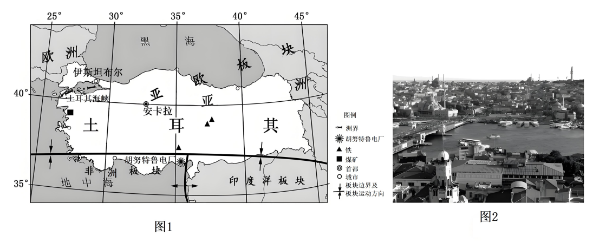
（1）土耳其地处亚洲和欧洲、沟通黑海和____海的十字路口，地理位置十分重要。首都是____，其经纬度约为（____，33°E）。
伊斯坦布尔是土耳其最大的城市和港口，联通亚洲和欧洲，被称为“两洲之城”。城市东部具有浓郁的东方色彩，城市西部则风光迥异，是东西方文化的荟萃之地。该城市于1985年被列入《世界遗产名录》。
（2）伊斯坦布尔属于____（城镇/乡村）聚落，其景观特征为____（从房屋、交通等方面作答）。以伊斯坦布尔为例，说明保护世界文化遗产的意义。____
胡努特鲁电厂是中国在土耳其的最大直接投资项目，该电厂于2022年投入运行。胡努特鲁电厂采用了降低煤耗、节约成本、减少排放的“超超临界技术”，有效提升项目的经济性和节能环保性。项目建成后，将对土耳其经济发展和当地就业做出贡献。
（3）读图1可知，因土耳其位于____（板块交界处/板块内部），____（自然灾害）频发，中国在建设胡努特鲁电厂时特别重视其防震功能。
（4）结合材料，中土合作主要是在____（双项选择）方面的合作，属于____（南北对话/南南合作）。
A．经济 B．体育 C．技术 D．医疗
（5）结合图文资料，说一说中土合作对土耳其的影响。
【答案】（1） ①. 地中 ②. 安卡拉 ③. 40°N
（2） ①. 城镇 ②. 城镇聚落由于人口密集，房屋通常高大且密集排列；且有发达的道路网络，道路纵横交错，交通便利 ③. 保护文化多样性、促进经济发展、增强民族自豪感和文化认同感
（3） ①. 板块交界处 ②. 地震
（4） ①. AC ②. 南南合作
（5）对土耳其而言，能获得中国的投资和技术支持，促进经济发展，增加就业机会，提升基础设施水平
【解析】
【分析】本大题以土耳其位置示意图为材料，涉及六大板块分布、板块运动的影响、经纬网定位、国际经济合作等相关内容，考查学生对相关知识点的掌握程度。
【小问1详解】
土耳其是一个拥有优越地理位置的国家，土耳其地处亚洲、非洲和欧洲三大洲的交汇处，同时又临黑海、地中海，土耳其海峡扼守黑海出海口，地理位置十分优越，其首都是安卡拉，经纬度约为（40°N，33°E）。
【小问2详解】
伊斯坦布尔是土耳其的重要城市，人口众多，经济活动以工业、商业、服务业等非农业生产为主，所以属于城镇聚落；从房屋方面看，城镇聚落由于人口密集，房屋通常高大且密集排列；从交通方面看，城镇有发达的道路网络，道路纵横交错，交通便利；保护世界文化遗产，能够让各种独特的文化得以保存和传承，避免文化同质化的趋势，维护世界文化的多样性，其丰富的文化遗产如古老的建筑、宗教场所等，吸引了众多国内外游客，带动了当地旅游业的发展，进而促进了餐饮、住宿、交通等相关产业的繁荣，带动当地经济，还可以能够让人们更好地了解自己的历史和文化，增强对本民族文化的认同感和自豪感，同时也有助于传承和弘扬民族精神。
【小问3详解】
读图结合所学知识可知，土耳其多发地震是由于该国处于亚欧板块、非洲板块和印度洋板块的交界地带，板块交界处地壳运动活跃，多火山地震。
【小问4详解】
中国和土耳其都是发展中国家，中土合作主要涉及经济、技术等方面。经济合作涵盖了贸易、投资等多个领域，技术合作则包括科技交流、技术转让等。体育、医疗合作虽然也有，但并非中土合作的主要方面。所以选AC；南北对话是指发展中国家与发达国家之间围绕改革不合理的国际经济旧秩序，加强双方经济合作的谈判和斗争，而南南合作则指的是发展中国家之间的经济技术合作，中土都属于发展中国家，因此合作是南南合作。
【小问5详解】
中国在基础设施建设、制造业等方面具有优势，通过中土合作，中国可以为土耳其提供资金和技术，帮助土耳其建设公路、桥梁、港口等基础设施，推动当地产业发展，创造更多的就业机会，提升基础设施水平，促进经济增长。